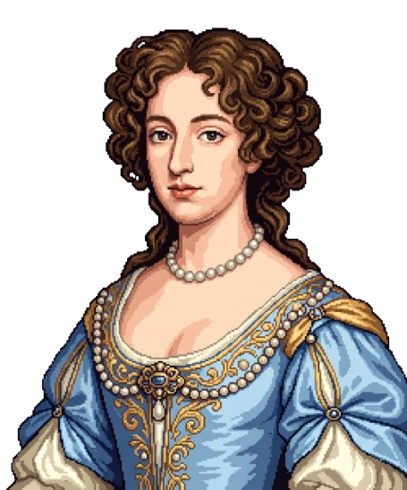
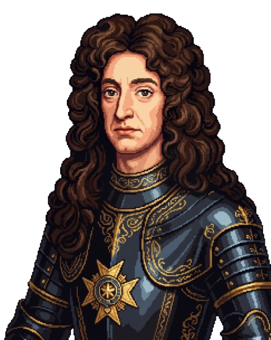
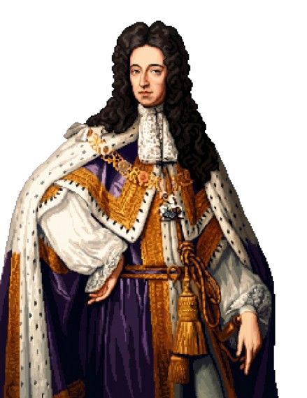
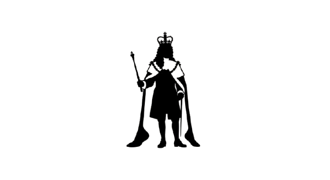
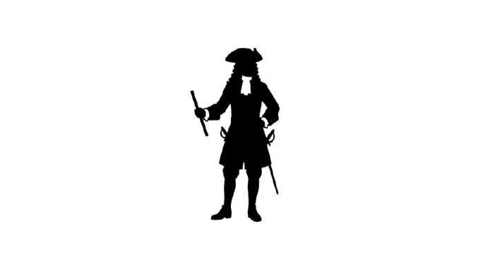
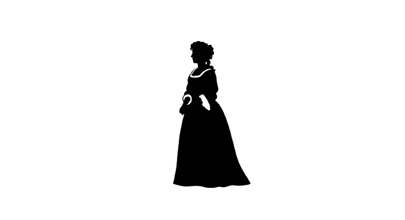

Krone
Monarch & Regierung
House of Lords
(Oberhaus)
Hochadel & Bischöfe
Sitze vererbt oder auf Lebenszeit ernannt
Hochadel & Bischöfe
Sitze vererbt oder auf Lebenszeit ernannt
House of Commons
(Unterhaus)
Abgeordnete der Grafschaften
Gewählte Vertreter
Abgeordnete der Grafschaften
Gewählte Vertreter
Wahl ↑
Wahlberechtigt
(ca. 2 - 3 % der Bevölkerung)
Männer mit hohem Grundbesitz & Vermögen.
Männer mit hohem Grundbesitz & Vermögen.
Kein politisches Mitspracherecht
(ca. 97 - 98 % der Bevölkerung)
Handwerker, Bauern, Arbeiter und sämtliche Frauen.
Handwerker, Bauern, Arbeiter und sämtliche Frauen.

König Wilhelm III.
Leitfrage zur Quellenanalyse:
Liebe Lernende, an welchen Stellen im Text wird besonders deutlich, dass der Monarch seine absolute Macht verliert und das Parlament massiv gestärkt wird?
Klickt auf einzelne Wörter, um eure Beweisstellen farbig zu markieren!
Liebe Lernende, an welchen Stellen im Text wird besonders deutlich, dass der Monarch seine absolute Macht verliert und das Parlament massiv gestärkt wird?
Klickt auf einzelne Wörter, um eure Beweisstellen farbig zu markieren!
Königin Maria II.
König Wilhelm III.
Frage lädt...
Bist du bereit, dein Wissen zu beweisen? Finde bei jeder Frage die richtige Antwort oder die richtigen Antworten!